Paisagens Mata ciliar
Formação florestal · 11 de 11
Mata ciliar
Floresta das margens dos rios médios e grandes. Ao contrário da mata de galeria, as copas das duas margens não se encontram: o rio é largo demais. Parte das árvores perde folhas na seca.8
- Cobertura
- as copas não cobrem o rio
- Altura
- floresta alta
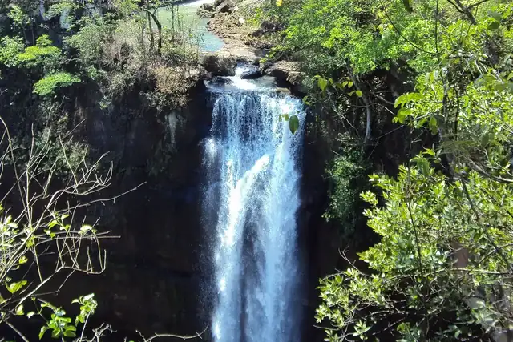
Como reconhecer
Duas fileiras de mata, uma em cada margem, com o rio aberto entre elas.
Por que importa
Segura as margens dos rios grandes contra a erosão e dá comida e abrigo para peixes e bichos da beira d’água. A lei protege as faixas de mata nas margens, mais largas quanto mais largo é o rio.33
Onde ver
Espécies desta paisagem
16 espécies do catálogo aparecem nesta paisagem. Ver com os filtros
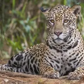
Mamíferos
Onça-pintada
Panthera onca
O maior felino das Américas. No Cerrado, vive sobretudo nas matas ao longo dos rios.15
Onde: mata de galeria, mata ciliar, cerradão
VulnerávelFoto: Charles J. Sharp, CC BY-SA 4.0
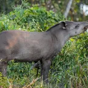
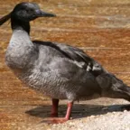
Aves
Pato-mergulhão
Mergus octosetaceus
Um dos patos mais raros do mundo: são menos de 250 adultos, todos em rios de água limpa e corredeira do Cerrado.18
Onde: mata de galeria, mata ciliar
Criticamente em perigoFoto: Prof. Sávio Freire Bruno, CC BY-SA 3.0
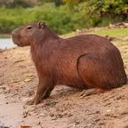
Mamíferos
Capivara
Hydrochoerus hydrochaeris
O maior roedor do mundo. Vive em grupos perto da água e mergulha para fugir.
Onde: vereda, mata ciliar, mata de galeria
Foto: Giles Laurent, CC BY-SA 4.0
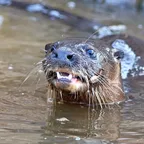
Mamíferos
Lontra
Lontra longicaudis
Nadadora de rios de água limpa: onde ela aparece, o rio está bem.
Onde: mata ciliar, mata de galeria
Foto: Charles J. Sharp, CC BY-SA 4.0
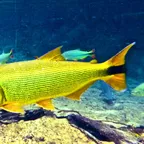
Peixes
Dourado
Salminus brasiliensis
Peixe dourado e forte, que sobe os rios para desovar. Vive nos grandes rios que nascem no Cerrado.
Onde: mata ciliar
Foto: Felipe cancian, CC BY-SA 3.0
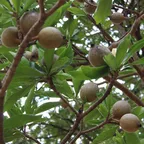
Árvores
Jenipapo
Genipa americana
O fruto verde dá uma tinta preta usada por muitos povos indígenas para pintar o corpo.
Onde: mata ciliar, mata de galeria
Foto: Mateusbotanica2020, CC BY-SA 4.0
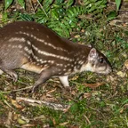
Mamíferos
Paca
Cuniculus paca
Roedor grande e noturno, de fileiras de pintas brancas. Vive perto da água e foge mergulhando.
Onde: mata de galeria, mata ciliar, vereda
Foto: Marcos Antonio Vieira de Freitas, CC BY-SA 4.0
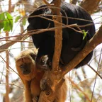
Mamíferos
Bugio-preto
Alouatta caraya
O macaco do ronco. Os machos são pretos e as fêmeas, mais claras; o grito se ouve a quilômetros.
Onde: mata de galeria, mata ciliar, cerradão
Foto: Miguelrangeljr, CC BY-SA 3.0
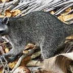
Mamíferos
Mão-pelada
Procyon cancrivorus
Parente do guaxinim, de máscara preta e mãos sem pelo. Anda à noite na beira dos rios.
Onde: mata ciliar, mata de galeria, vereda
Foto: Mariordo (Mario Roberto Durán Ortiz), CC BY-SA 4.0
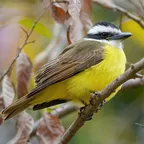
Aves
Bem-te-vi
Pitangus sulphuratus
Barriga amarela, faixa branca na cabeça e o canto que diz o próprio nome. Come de tudo.
Onde: cerrado, mata ciliar, vereda
Foto: Giles Laurent, CC BY-SA 4.0
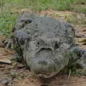
Répteis
Jacaré-de-papo-amarelo
Caiman latirostris
Jacaré de focinho largo e papo amarelado, dos rios e lagoas do sul do Cerrado.
Onde: mata ciliar, vereda
Foto: Lauro Sirgado, CC BY-SA 3.0
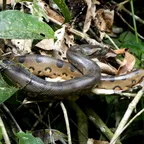
Répteis
Sucuri
Eunectes murinus
A maior cobra do Brasil. Não tem veneno: vive na água e mata a presa apertando.
Onde: vereda, mata ciliar
Foto: Kai Squires, CC BY 4.0
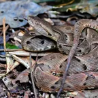
Répteis
Caiçaca
Bothrops moojeni
A jararaca do Cerrado, das beiras de rio e de vereda. Venenosa: é das cobras que mais causam acidentes na região.
Onde: mata de galeria, mata ciliar, vereda
Foto: Alessandher Piva, CC BY 4.0
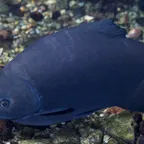
Peixes
Pacu
Piaractus mesopotamicus
O peixe que come frutos: engole os que caem na água e espalha as sementes rio acima.
Onde: mata ciliar
Foto: R Vasconcellos, CC BY 4.0
Peixes
Piranha-vermelha
Pygocentrus nattereri
Peixe de dentes afiados e barriga vermelha. A fama de fera é bem maior do que o perigo.
Onde: mata ciliar, vereda